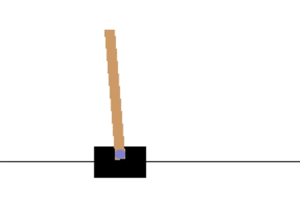
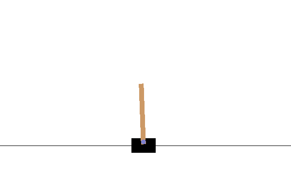
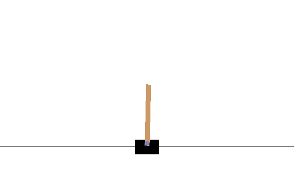

Học Tăng Cường Sâu
Học tăng cường (Reinforcement Learning - RL) được xem là một trong những mô hình học máy cơ bản, bên cạnh học có giám sát và học không giám sát. Trong khi học có giám sát dựa vào tập dữ liệu với kết quả đã biết, RL lại dựa trên học thông qua hành động. Ví dụ, khi lần đầu chơi một trò chơi máy tính, bắt đầu chơi mà không biết luật, và sau đó cải thiện kỹ năng chỉ bằng cách chơi và điều chỉnh hành vi.
Câu hỏi trước bài giảng
Để thực hiện RL, cần:
- Một môi trường hoặc trình mô phỏng để thiết lập các quy tắc của trò chơi. có khả năng chạy các thí nghiệm trong trình mô phỏng và quan sát kết quả.
- Một hàm thưởng, chỉ ra mức độ thành công của thí nghiệm. Trong trường hợp học chơi trò chơi máy tính, phần thưởng sẽ là điểm số cuối cùng của chúng ta.
Dựa trên hàm thưởng, điều chỉnh hành vi và cải thiện kỹ năng để lần sau chơi tốt hơn. Điểm khác biệt chính giữa các loại học máy khác và RL là trong RL, thường không biết mình thắng hay thua cho đến khi kết thúc trò chơi. Vì vậy, thể nói liệu một hành động cụ thể có tốt hay không - phần thưởng chỉ được nhận vào cuối trò chơi.
Trong quá trình RL, thường thực hiện nhiều thí nghiệm. Trong mỗi thí nghiệm, cân bằng giữa việc tuân theo chiến lược tối ưu đã học được (khai thác) và khám phá các trạng thái mới có thể (khám phá).
OpenAI Gym
Một công cụ tuyệt vời cho RL là OpenAI Gym - một môi trường mô phỏng, có thể mô phỏng nhiều môi trường khác nhau từ các trò chơi Atari đến các bài toán vật lý như cân bằng cột. Đây là một trong những môi trường mô phỏng phổ biến nhất để huấn luyện các thuật toán học tăng cường, và được duy trì bởi OpenAI.
Note: Bạn có thể xem tất cả các môi trường có sẵn từ OpenAI Gym tại đây.
Cân Bằng CartPole
Chắc hẳn bạn đã từng thấy các thiết bị cân bằng hiện đại như Segway hoặc Gyroscooters. Chúng có khả năng tự động cân bằng bằng cách điều chỉnh bánh xe dựa trên tín hiệu từ cảm biến gia tốc hoặc con quay hồi chuyển. Trong phần này, học cách giải quyết một vấn đề tương tự - cân bằng một cột. Nó giống như tình huống một nghệ sĩ xiếc cần cân bằng một cột trên tay - nhưng việc cân bằng này chỉ xảy ra trong không gian 1D.
Phiên bản đơn giản hóa của bài toán cân bằng được gọi là vấn đề CartPole. Trong thế giới CartPole, có một thanh trượt ngang có thể di chuyển sang trái hoặc phải, và mục tiêu là cân bằng một cột thẳng đứng trên thanh trượt khi nó di chuyển.

Để tạo và sử dụng môi trường này, một vài dòng mã Python:
import gym
env = gym.make("CartPole-v1")
env.reset()
done = False
total_reward = 0
while not done:
env.render()
action = env.action_space.sample()
observaton, reward, done, info = env.step(action)
total_reward += reward
print(f"Total reward: {total_reward}")
Mỗi môi trường có thể được truy cập theo cách giống nhau:
* env.reset bắt đầu một thí nghiệm mới
* env.step thực hiện một bước mô phỏng. Nó nhận một hành động từ không gian hành động, và trả về một quan sát (từ không gian quan sát), cũng như phần thưởng và cờ kết thúc.
Trong ví dụ trên, thực hiện một hành động ngẫu nhiên ở mỗi bước, đó là lý do tại sao thời gian sống của thí nghiệm rất ngắn:

Mục tiêu của thuật toán RL là huấn luyện một mô hình - cái gọi là chính sách π - sẽ trả về hành động dựa trên trạng thái hiện tại. có thể coi chính sách là xác suất, ví dụ: với bất kỳ trạng thái s và hành động a, nó sẽ trả về xác suất π(a|s) rằng chúng ta nên thực hiện a trong trạng thái s.
Thuật Toán Policy Gradients
Cách rõ ràng nhất để mô hình hóa một chính sách là tạo một mạng nơ-ron sẽ nhận trạng thái làm đầu vào và trả về các hành động tương ứng (hoặc đúng hơn là xác suất của tất cả các hành động). Theo một cách nào đó, nó sẽ giống với một bài toán phân loại thông thường, với một điểm khác biệt lớn - biết trước hành động nào nên thực hiện ở mỗi bước.
Ý tưởng ở đây là ước tính các xác suất đó. Chúng ta xây dựng một vector phần thưởng tích lũy cho thấy tổng phần thưởng của chúng ta tại mỗi bước của thí nghiệm. áp dụng giảm giá phần thưởng bằng cách nhân các phần thưởng trước đó với một hệ số γ=0.99, để giảm vai trò của các phần thưởng trước đó. Sau đó, củng cố các bước trong đường đi của thí nghiệm mang lại phần thưởng lớn hơn.
Tìm hiểu thêm về thuật toán Policy Gradient và xem nó hoạt động trong notebook ví dụ.
Thuật Toán Actor-Critic
Phiên bản cải tiến của phương pháp Policy Gradients được gọi là Actor-Critic. Ý tưởng chính đằng sau nó là mạng nơ-ron sẽ được huấn luyện để trả về hai điều:
- Chính sách, xác định hành động nào cần thực hiện. Phần này được gọi là actor.
- Ước tính tổng phần thưởng mà mong đợi nhận được tại trạng thái này - phần này được gọi là critic.
Theo một cách nào đó, kiến trúc này giống với GAN, nơi chúng ta có hai mạng được huấn luyện đối kháng nhau. Trong mô hình actor-critic, actor đề xuất hành động cần thực hiện, và critic cố gắng đánh giá kết quả. Tuy nhiên, mục tiêu của chúng ta là huấn luyện hai mạng này đồng bộ.
Vì cả phần thưởng tích lũy thực tế và kết quả trả về bởi critic trong thí nghiệm, việc xây dựng hàm mất mát để giảm thiểu sự khác biệt giữa chúng tương đối dễ dàng. Điều này sẽ cho chúng ta critic loss. tính actor loss bằng cách sử dụng cách tiếp cận tương tự như trong thuật toán policy gradient.
Sau khi chạy một trong những thuật toán này, mong đợi CartPole của mình hoạt động như sau:

✍️ Bài Tập: Policy Gradients và Actor-Critic RL
Tiếp tục học trong các notebook sau:
Các Nhiệm Vụ RL Khác
Học Tăng Cường hiện nay là một lĩnh vực nghiên cứu phát triển nhanh chóng. Một số ví dụ thú vị về học tăng cường bao gồm:
- Dạy máy tính chơi trò chơi Atari. Thách thức trong vấn đề này là có trạng thái đơn giản được biểu diễn dưới dạng vector, mà là một ảnh chụp màn hình - và sử dụng CNN để chuyển đổi hình ảnh màn hình này thành vector đặc trưng hoặc để trích xuất thông tin phần thưởng. Các trò chơi Atari có sẵn trong Gym.
- Dạy máy tính chơi các trò chơi bàn cờ, như Cờ vua và Cờ vây. Gần đây, các chương trình tiên tiến như Alpha Zero đã được huấn luyện từ đầu bằng cách hai tác nhân chơi đối kháng nhau và cải thiện qua từng bước.
- Trong công nghiệp, RL được sử dụng để tạo hệ thống điều khiển từ mô phỏng. Một dịch vụ gọi là Bonsai được thiết kế đặc biệt cho mục đích này.
Kết Luận
học cách huấn luyện các tác nhân để đạt được kết quả tốt chỉ bằng cách cung cấp cho chúng một hàm thưởng định nghĩa trạng thái mong muốn của trò chơi, và cho chúng cơ hội khám phá không gian tìm kiếm một cách thông minh. thử nghiệm thành công hai thuật toán và đạt được kết quả tốt trong một khoảng thời gian tương đối ngắn. Tuy nhiên, đây chỉ là sự khởi đầu của hành trình học RL, và bạn nên cân nhắc tham gia một khóa học riêng nếu muốn tìm hiểu sâu hơn.
🚀 Thử Thách
Khám phá các ứng dụng được liệt kê trong phần 'Các Nhiệm Vụ RL Khác' và thử triển khai một ứng dụng!
Câu hỏi sau bài giảng
Ôn Tập & Tự Học
Tìm hiểu thêm về học tăng cường cổ điển trong Chương trình Học Máy cho Người Mới Bắt Đầu.
Xem video tuyệt vời này nói về cách máy tính học chơi Super Mario.
Bài Tập: Huấn luyện Mountain Car
Mục tiêu của bạn trong bài tập này là huấn luyện một môi trường Gym khác - Mountain Car.